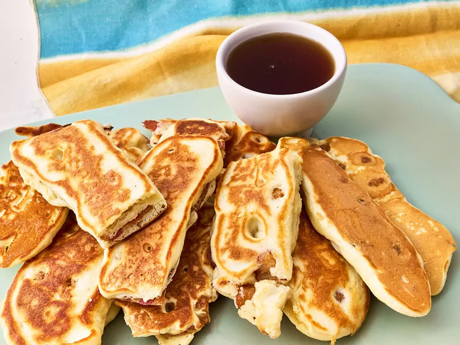

Easy Bacon Sticks
These easy bacon pancake sticks, using only 2 ingredients, are a complete breakfast you can grab-and-go on the run. The kids will love them!
Ingredients
- 2 cups complete pancake mix
- 1 1/3 cups water, plus more as needed
- 3 tablespoons butter, divided
- 8 slices thick cut bacon, cooked until crisp and sturdy
- syrup for dipping (optional)
Recipe
- Combine pancake mix and water in a medium bowl and stir until just blended (there may be a few lumps).
- Heat half of the butter in a large nonstick skillet over medium heat until melted.
- Dip half of the bacon in the batter until evenly coated and place in the skillet. Cook undisturbed until lightly browned and slightly puffed,
about 2-3 minutes. Flip and cook for another 2-3 minutes or until the pancake is cooked through.
- Repeat with remaining bacon and batter. Serve with syrup if desired for dipping.

Home